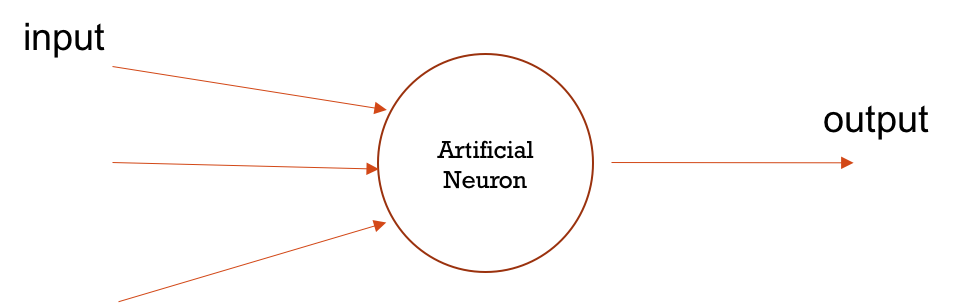

Neural Networks
A Neuron is …

What is an Artificial Neural Network?
Mimicking a neuron’s function

Multi Layer Perceptron

Some Features of MLP
- MLPs consist of three or more layers of nodes
- MLPs are fully connected
- MLP is a class of feedforward artificial neural networks (ANNs)
Input Layer
Input layer simply emits input Zi
Output Layer
Has specific number of neurons. Ex: 10 if we have can have 10 different results
Hidden Layers
each neuron in the hidden layer uses a non-linear activation function
Activation Functions
- The activation function in a neural network is a function used to transform the activation level of a unit (neuron) into an output signal.
- The activation function essentially divides the original space into typically two partitions, having a "squashing" effect.
Feedforward Neural Network
A feedforward neural network is an artificial neural network wherein connections between the units do not form a cycle.
Recurrent Neural Network
A recurrent neural network (RNN) is a class of artificial neural network where connections between units form a directed cycle. This allows it to exhibit dynamic temporal behavior.
Backpropagation
Backpropagation is a method used in artificial neural networks to calculate the error contribution of each neuron after a batch of data (in image recognition, multiple images) is processed
something
Backpropagation is a method used in artificial neural networks to calculate the error contribution of each neuron after a batch of data (in image recognition, multiple images) is processed
Resources
https://secure.ecs.soton.ac.uk/notes/comp6229/l7_neuralnetworks.pdf